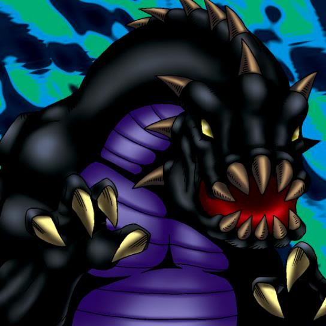

B. Dragon Jungle King

STATS
ATK: 2100
DEF: 1800DECK COST
Deck Cost per Card: 39Fusion List (9 Possible Fusions)
- B. Dragon Jungle King + Electric Lizard = Twin-Headed Thunder Dragon
- B. Dragon Jungle King + Electric Snake = Twin-Headed Thunder Dragon
- B. Dragon Jungle King + Kaminarikozou = Twin-Headed Thunder Dragon
- B. Dragon Jungle King + LaLa Li-oon = Twin-Headed Thunder Dragon
- B. Dragon Jungle King + Oscillo Hero #2 = Twin-Headed Thunder Dragon
- B. Dragon Jungle King + Sanga of the Thunder = Twin-Headed Thunder Dragon
- B. Dragon Jungle King + The Immortal of Thunder = Twin-Headed Thunder Dragon
- B. Dragon Jungle King + Thunder Dragon = Twin-Headed Thunder Dragon
- B. Dragon Jungle King + Time Wizard = Thousand Dragon